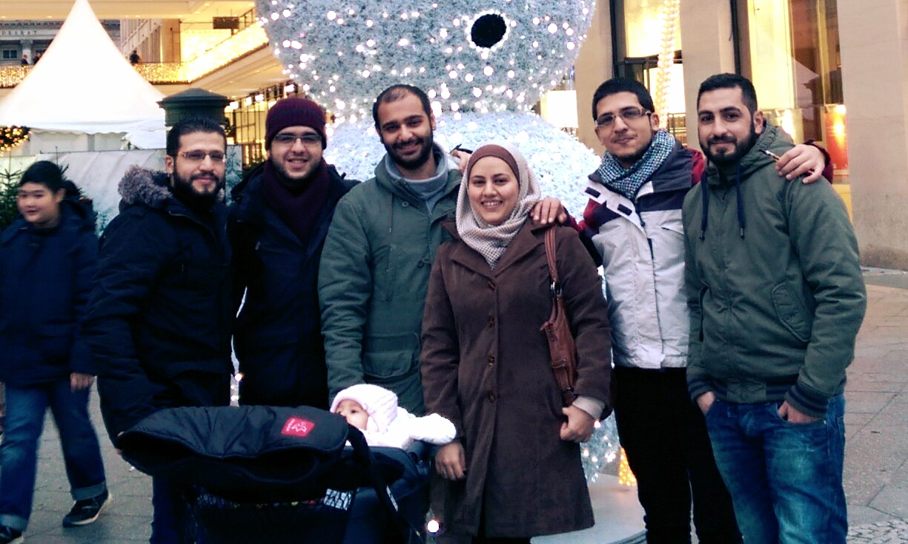

“I became more intolerant to crowds,” replies Zakir when asked whether he has changed after living in Germany for five years.
Born in Dhaka, the capital of Bangladesh and home to 15 million, Abdullah Zakir Hussein moved to Ilmenau, the capital of Thuringia, in 2010 to study a Master in Computer Science. This town of 26 000 is known not only for its beautiful landscapes, but its University of Technology. Around 7000 students focus mainly on mathematics, physics and engineering and Zakir believes he was the only Bangladeshi studying there at the time. While the students were very friendly, some professors were too busy with their research to consider the background of their foreign students, making things challenging.
The city is desolated with not many alternatives to student life. “The biggest concentration of people is to be seen in supermarkets,” he laughs. When not studying, he would spend his time reading novels and enjoying the nature. “There’s an excellent hiking trail where Goethe used to walk around. They say that if you don’t walk around there, you won’t pass your exams.”
Forced to stop his studies to make ends meet, Zakir took up a full time engineering position in a “mittelständler” - a middle size company which are still til today the core and pride of German industry. After a few years work under his belt, Zakir packed up to join the bustle of the Berlin startup scene.
Growing up in a small family of four, Zakir was introduced to electronics at the age of nine and has been fascinated ever since. He discovered computers at eighteen and chose to pursue his passion at university. “There’s not many engineering schools - most are for agriculture or literature. These days, people are becoming more interested in engineering because after doctors, it gives you the biggest chance for a decent life standard. But most people are still interested in becoming a doctor. My father was a doctor so I was supposed to be a doctor.“
Zakir graduated with 25 others - 13 of them female. “One of my female classmates became a lecturer at the university. Most others became QA engineers.” He himself took a government job creating software to monitor import and export out of Dhaka. Working on software for the use of 50 000 people at the same time brought him to the realisation that there was still so much more to learn. “It made me realise that what I learnt from university was not enough. I learnt a lot from that project. I saved some money so i thought i should go overseas to learn more. My dad used to say: ‘Doctors go to the UK, engineers go to Germany’.”
Bangladesh is a fast developing country, still living in the shadow of its neighbours. Ancient Bengal (first settlements date back to 4000 years ago) came to being as Bangladesh in 1971 as a result of the infamous war between India and Pakistan. Since then, the country has managed to lower its poverty level to 25% and double its per capita income. This rather tolerant country with an economy based on agriculture and gourmet production has to fight serious floods and typhoons as an effect of deforestation and climate change.
“The whole country is surrounded by rivers, so business is based on agricultural import and export. The thriving industries are river based, like fish, rice, and tea, as well as garment making, as labour is very cheap.”
Most work opportunities for engineers are still in outsourcing and the public sector and the tech scene is almost non existent. “I would like to find a job that has a really good project, which is impossible in Bangladesh. You can do some small projects to make some money, but it gets boring after the first six months.”
“In Bangladesh, everything is very ad hoc. There’s no structure. In Germany, it’s all about measuring performance. If they see that something’s not performing very well, they will change something so performance is better. That wouldn’t happen in Bangladesh. People don’t care, people don’t even see these things, because most people don’t have an engineering background.”
Zakir loves to talk about software.
“Software is like a soul for computers. The software is operating the computer. If you press the power button on the computer, that means the soul is coming to the hardware. That’s very appealing. When you are making music or making a movie, it’s like making software. When you are writing software you are creating something. You are an artist.”
He likes to see the way software can be used to improve the lives of people. “Java was mainly developed for large scale systems and now it’s used for blogs and newspapers, so this is very exciting for me. To see that whatever we are doing is contributing to the functionality and improvement of people’s lives, without them even realising it. I think the biggest power of technology is that it is happening without you knowing it.”
What does the future hold for Zakir?
“I want to learn as much as I can. I would like to work here for a few years at least. I would like to get a deep backend job where I can get experience doing a lot of things with a lot of people in a large project. Then I will figure out what to do with that expertise.”
We are meeting Haneen Abd Allah, her brother, Ali and her fiance, Wisam Duwwah, in her favourite part of Berlin, Treptower Park. Haneen, 25, was born and raised in Al-Yarmouk, a Palestinian camp in Damascus. Her grandparents moved from Palestine to Syria in 1948. Almost a year and a half ago, after graduating from university, Haneen escaped Damascus to start a new life in Berlin.
Haneen studied software engineering at a private university between Damascus and Daraa. Frustrations with her computer encouraged her to pursue this field, with her first contact and interest coming from a programming class in the 10th grade.
She credits her success to the support of her family. “Without my parents, I wouldn’t have reached this point. My parents supported us all equally, and that was good, I can see it now. Now we’re living out of Syria and we’re still strong, we’re still able to work, without depending on the government’s money.”
Although she claims that working in the IT field is not seen as unusual in Syria, Haneen was still the only female graduating from her year at university.
Currently, Haneen is working as an android developer for a mobile startup. “There aren’t a lot of girls working with me.” Being a woman developer from Syria was an advantage for me, but not in a way that I like. People specify me as the girl wearing the kopftuch, or as a female developer. I don’t want to be the girl that’s wearing the kopftuch, I want to be a normal girl and a developer. Not the developer that is wearing kopftuch.”
During her studies, the university had to be closed for a month due to the civil uprising in Daraa. When the revolution started, she thought it would only be for a month and considered delaying her studies until it was over, but realises now it was a good idea to continue.
Haneen’s father studied in Berlin in the 80s and due to his stories and experience of the country, added to its role as a leader in technology and innovation, Haneen dreamt of coming to Germany to study. Coincidentally, the German visa was the easiest to obtain for Palestinians in Syria during those turbulent times.
Haneen then headed for Germany alone, leaving fiance Wisam behind to complete his studies in interior design. “As Palestinian people, we are very careful to finish university and be educated. We don’t want to come here and work in a restaurant.”
Although Haneen was welcomed in Berlin at the airport by family friends, she couldn’t enjoy the moment of finally arriving in Germany and realising a dream. Her mind was still on Syria, her parents and friends she left behind, her whole world she knew and the dangerous route she travelled, from Syria to Lebanon, as Damascus airport was no longer operational.
“It gives me hope, the situation of Berlin and Germany in general. The people were able to rebuild their country, so being in Berlin is somehow giving me hope that one day we’re going to rebuild Syria and Palestine.”
To Haneen, self sufficiency is of great importance. However, bureaucracy doesn’t make things easy. “The problem is we don’t know where to start from. We want to meet someone who can show us the way, so we can be independent.”
“Another issue is the working permit. My first year here, I wasn’t allowed to look for employment. I told myself that if I ran out of money, I would apply to be a refugee, but I didn’t want to do that. Even though I was refused a work permit, I wanted to depend on myself.”
Currently considered stateless by the German government, Haneen wants to work hard to gain a nationality. “In any country, whenever there is a problem, they say that the people without nationalities or the people that don’t belong to the country are the ones that have caused the problem. This was the case in Syria.”
“I was born in Syria but I’ve never seen myself as Syrian. I love Syria, I love Damascus, and I miss it, but of course, I am Palestinian. To be Palestinian is to fight for your rights. I am here in Berlin and with no nationality, this is one of the worst things in my life.”
Despite these difficult issues, the future is bright. With a new apartment near Treptower Park almost ready and wedding preparations underway, Haneen and Wisam are forging a new life here in Berlin.
Haneen with her family and fiance, Wisam (third left). Wisam is an interior design graduate who travelled three months from Syria to Germany. Now he is hoping to pursue a career in this field. Ali (second from right) was stopped in Denmark on the way to Malmö, where his teenage brother resides. He attends a language school and plans to resume his studies in Copenhagen.